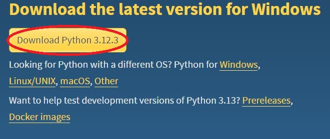
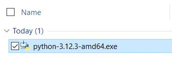
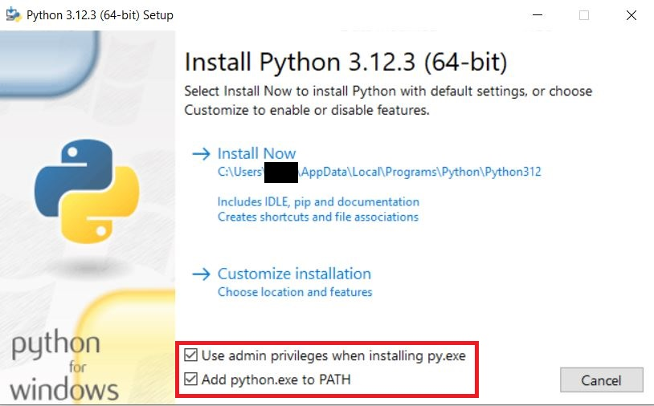
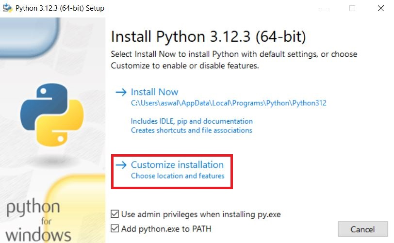
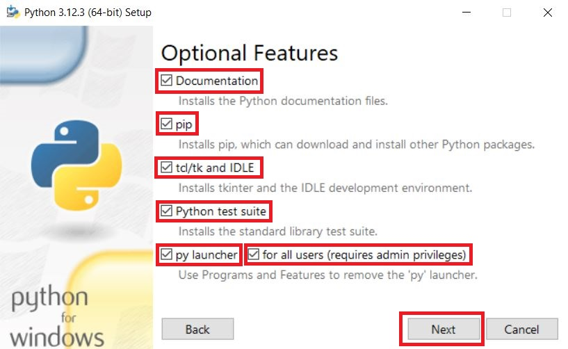
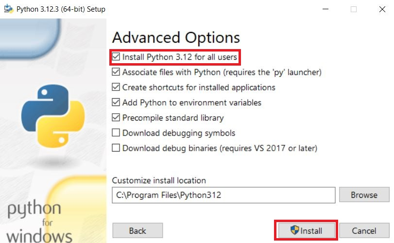
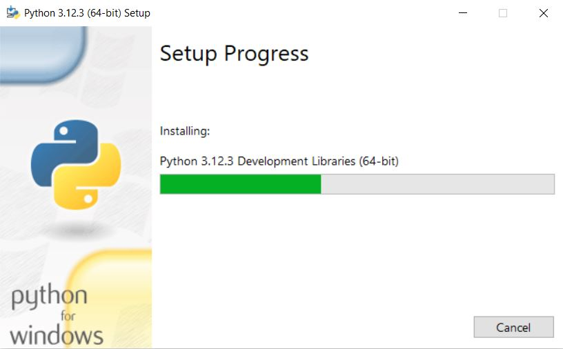
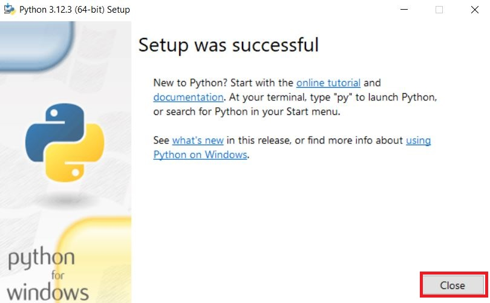
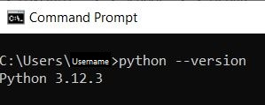

Download Python
Go to the Python download page to download the latest version of Python. Click the yellow button that says 'Download Python [latest version]' under the 'Download the latest version for Windows' text.
Run the Python Installer
Double-click the Installer that you downloaded to run it.
Enable Admin and PATH
Ensure that both 'Use admin priviliges when installing py.exe' and 'Add python.exe to PATH' are both enabled. If either is not enabled, enable it by clicking the box next to it.
Begin Customization
Click 'Customize Installation' to begin the customization.
Select Features
Select all of the options provided and then click 'Next'.
Begin Installation for all users
Select 'Install Python [version] for all users', then click 'Install'
Wait
Wait for Python to install. Note: The icon on your taskbar may turn red. This is okay; do not be alarmed.
Complete Installation
Click 'Close' on the final screen to complete the installation.
Verify Installation
Open Command Prompt by typing CMD into the Windows search and pressing enter. Then run the following command: python --version. The output should be the version of Python you had installed.
